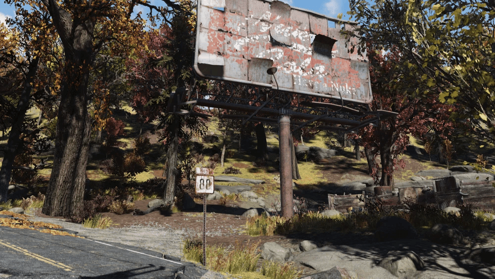
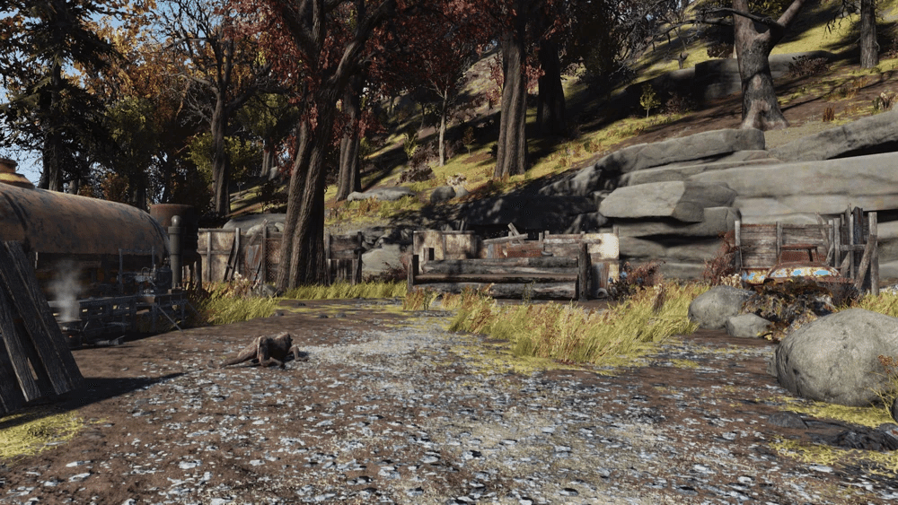

ビルボードのジャンクキャンプ
DATE: 2026/2/7
ビルボードのジャンクキャンプは、アパラチアの森林地帯地域にある未登録のロケーションです。
概要
このキャンプはルート88沿いに位置し、ブラックマウンテン兵器工場の南東にあります。
場所自体はマップに登録されませんが、アップデート「Boardwalk Paradise」により、キャンプ内にオルガン洞窟の西側の入り口（マップ上では「オルガン洞窟・西」と表示されます）が追加されました。
レイアウト

この道路脇のキャンプは木製の壁に囲まれており、巨大なヌカ・コーラのビルボードの真下に位置しています。
正門から入ると、左側にアーマー作業台と武器作業台があります。
その近くには、有毒なバレルが積まれた放射能の山と、背の高い黄色いサイロがあります。

右側には、戦利品として回収可能なジャンクの山があります。
キャンプ内の至る所に、テイトやマットフルーツ、煤の花などの作物が植えられています。

また、ここでは薪の山などから木材を豊富に入手することができます。
このジャンクヤード内には、オルガン洞窟の西側の入り口が存在します。
出現するクリーチャー
野良犬
オオカミ
クラフトステーション
アーマー作業台
武器作業台
登場作品
ビルボードのジャンクキャンプは Fallout 76 にのみ登場します。
舞台裏
開発段階でオルガン洞窟の西側の入り口を追加した際、一時的にこのキャンプをプレイヤーの C.A.M.P. 設置禁止エリアにすることが検討されました。
これは登録されたロケーションにおける標準的な処置です。
しかし、開発チームはこの場所がプレイヤーの C.A.M.P. 設置場所として非常に人気があることを知っていたため、アップデートのリリース前に制限を開放しました。
レベルデザイナーのマット・トーマスは、振り返ってみれば、このエリアを建設禁止にしなかったことは正しい判断だったと述べています。
感想
C.A.M.P. の聖地: 開発側がプレイヤーの動向を把握し、あえて建設制限をかけなかったというエピソードは、コミュニティを大切にする運営の姿勢が伺えて興味深いですね。
実用的な拠点: 2種類の作業台が完備されており、さらにジャンクや薪、作物が手に入るため、初心者から上級者まで利用価値の高い場所と言えます。
洞窟へのアクセス: マップに登録されていない場所でありながら、オルガン洞窟という重要なロケーションへの入り口を内包している点も、探索の楽しさを広げています。
This article uses material from the “Endor” article on the Fallout wiki at Fandom and is licensed under the Creative Commons Attribution-Share Alike License.
C.A.M.P. の聖地: 開発側がプレイヤーの動向を把握し、あえて建設制限をかけなかったというエピソードは、コミュニティを大切にする運営の姿勢が伺えて興味深いですね。
実用的な拠点: 2種類の作業台が完備されており、さらにジャンクや薪、作物が手に入るため、初心者から上級者まで利用価値の高い場所と言えます。
洞窟へのアクセス: マップに登録されていない場所でありながら、オルガン洞窟という重要なロケーションへの入り口を内包している点も、探索の楽しさを広げています。
This article uses material from the “Endor” article on the Fallout wiki at Fandom and is licensed under the Creative Commons Attribution-Share Alike License.
TAGS: #Fallout76#Location